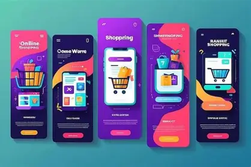

My Future
1. The dream I have for the future
One day, I hope to work in a field that I am passionate about and make a positive impact on the world. I want to be able to use my skills and knowledge to solve problems and create innovative solutions. Moreover, I want to be able to create extension that helps everyone in the world can access information from anywhere at any time.
1.1 Mutilwork
That will be the name of my future extension. Which helps people from all around the world, all kinds of people able to communicate, work and research while studying another language.
I already have a clear vision of what I want to achieve in the future. However to achieve that , I think that I would need to work really really hard. Even though the rate of joblessness is high in this field, I am determined to pursue my goals :DDD

Concept illustration: an example of the proposed Mutilwork extension.
2. Potential Developments
In the future, I hope to see more advancements in technology that can help people in their daily lives. For example, I would like to see more development in the field of artificial intelligence, which can help automate tasks and make our lives easier. Additionally, I hope to see more advancements in renewable energy sources, which can help reduce our dependence on fossil fuels and combat climate change.
During university, I hope to build a portfolio of creative technology projects, take part in a hackathon, and meet other students who share my interests. I also want to improve my communication skills and gain experience through an internship or research project. I am very grateful for the opportunities to meet new people who are super kind, talented and always positive. I hope to continue learning and growing as a person and a professional in the future.